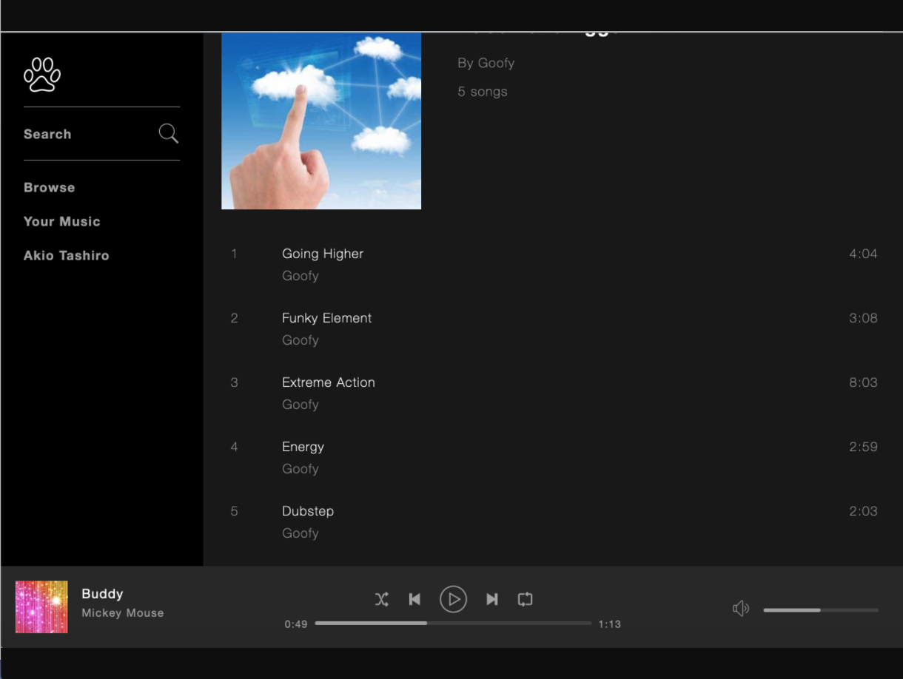
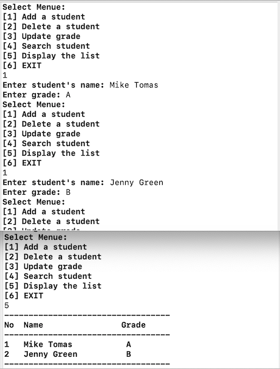
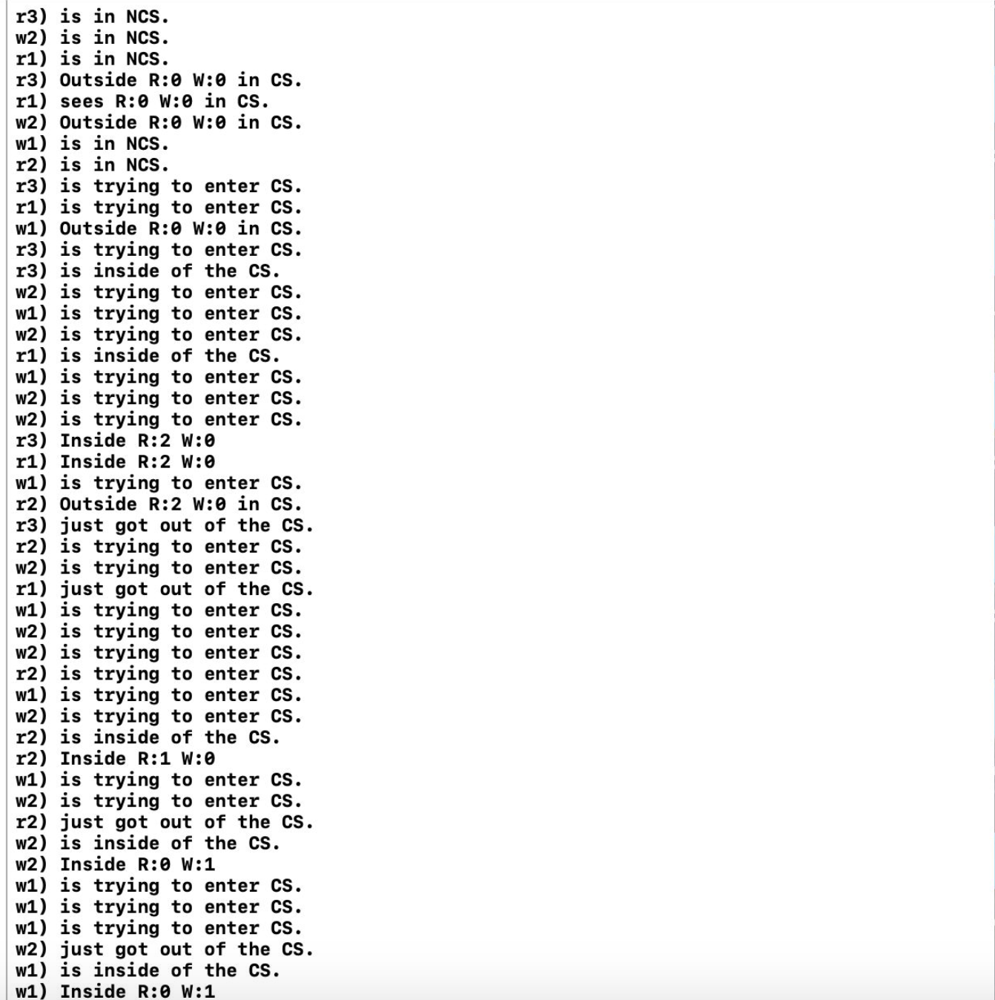

Akio Tashiro
I'm passionate developer but more importantly I'm possionate about learning and adapting to
new technologies.
Originally hailing from Japan and currently living in New York. For the last 4 years or so
I’ve been honing my skills innetwork security,
programing, creation of web, mobile applications, and more.
I strive to create excellent also secure applications,and elegant solutions that surprise and delight users while
keeping complex technical dependencies in mind for implementation, scalability, and developer sanity.
I keep working on projects to implove my skills and positing those work on this webpage.
So please go ahead and check it out below.
Music Streaming App
like Spotify

This is music streaming application just like Spority complete with:
User registration
Search for all your favorite artists, albums and songs in real time!
Create and customize your own playlists
Control the music with all the usual controls such as play, pause, skip, previous, shuffle, repeat etc.
HTML/CSS, PHP, jQuery, JavaScript, MySQL

This is a student grade book application that allows users to add students' name
and their grade, and also search, delete, and display the list.
C++/Linked List

This project simulates one of the classical synchronization problems in order to see
how the (semi) critical section problem could be implemented using binary and counting semaphores.
C++
Multi-Threading App
/ Win32

The program simulates simple multithreading application with “producer and consumer” problem:
The user can run the program and will enter two numbers on the command line. Those numbers will be used for buffer size and counter limit.
The main program will then create two separate threads, producer and consumer thread etc.
C++ / Thread-Win32